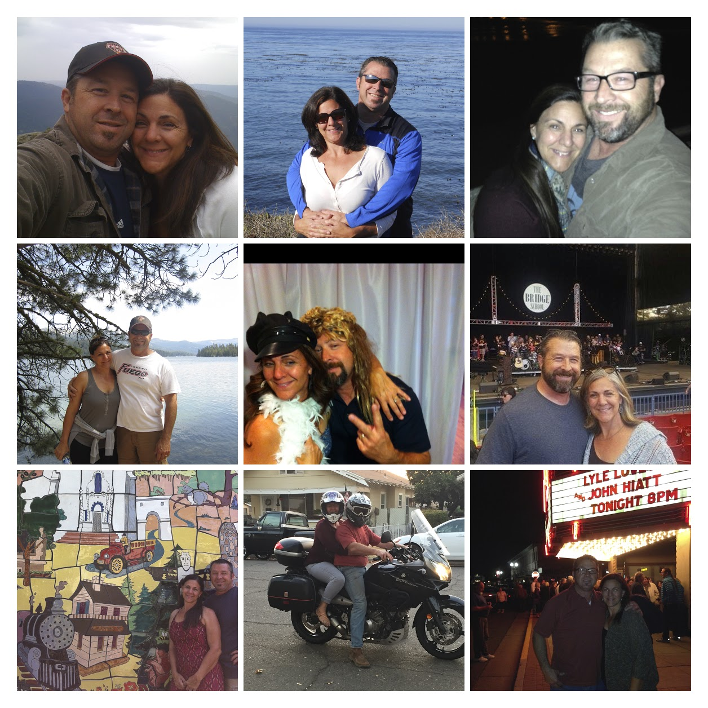
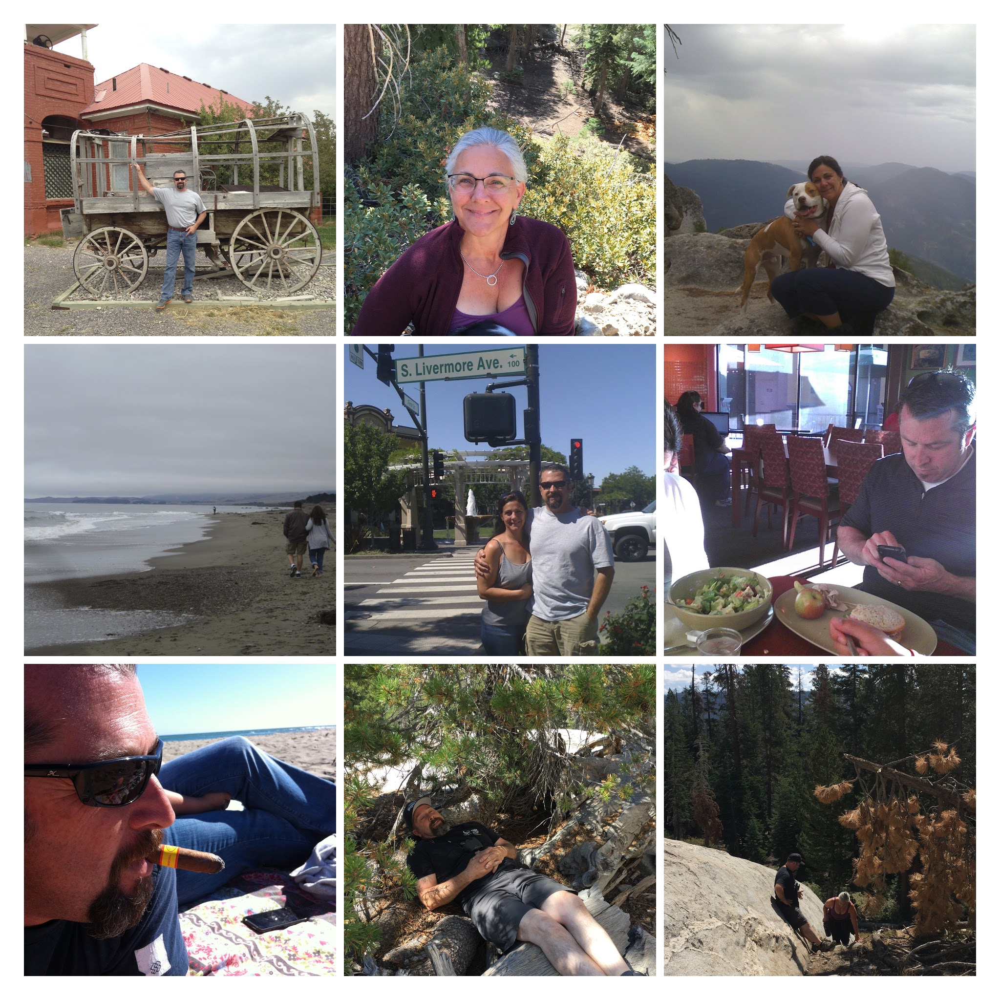

You have brought four incredible people on this earth who are doing amazing things with their lives.
Again and again the generosity experienced by the Kenny's is overwhelming for those you are in relationship with, love and compassion that comes from all members of the Kenny family.
When asking people if they know the Kenny's, a smile is automatically drawn across their face as they answer, "Yes! They are amazing!"
Thank You,
Theres Literally No words for ur love, gratitude, patience,kindness, empathy, and how u show us were all loved. U may b a lil nosey(mom) but at the end of the day u have supported us as much as u can. Mom i havent used tht word all my life but im thankful u allowed me to do so when it comes to u. Papa has been there as well. I have learned much from a man who didnt birth me an im grateful for tht. Id love my son to grow up an have tht kind heart u have, the patience, and love u give him/us has made me proud to tell n e body an every body ur my family. Thank u for never leavin us high an dry like the rest have. Thank u for ur prayers thank u for constantly showin us we have more then enough. We will always love u dont think otherwise. We Love u Sharon an the Kids🥰💞💕HAPPY ANNIVERSARY
Sometimes the people whom I known 4 only a short amount of time have a bigger impact on me than those I've known 4ever Happy Anniversary.
Love Tish (Next door) and family
Happy Anniversary to you two!
You two are such a perfect example of what marriage is. You can see the love you two have and the care you have for each other. People feel safe around you and your home. I feel warm and at peace when you two are around. You two are a gift to your family, friends, neighbors, church family and strangers. Celebrate your love this week and everyday.
We love you two and thankful for you!
We freak’n Love you!!!
Who would have known when I met you Nina, years ago, that our paths would cross again at On Ramps. I am so grateful for you and your music ministry. Jeff I so appreciate you and the great friend you are to my husband, he loves you. Also, your ceramic skills are on point. I love my pitcher. Your lives are a great ministry that speaks volumes. No sermon series could top what your lives Preach and teach about God’s love and grace.
Happy Anniversary!
Happy 30th Wedding Anniversary Nina and Jeff!
Well, I was there from the beginning of your beautiful relationship and although I was not quite sure of this “Jeff Kenny” for you Nina (LOL!), you two fell in love and quickly relieved any fears of mine! You became a family and love grew! It has been an inspiration to watch you both grow your love for each other and your family, with Christ always being at the center of your lives! Your loving, beautifully, gifted family is a testament of the love and dedication you two give them. All of the ways that you’ve extended your family and the ways that you have included us has been a true blessing to us!
We love you both so much!
Papa Jeff and Momma Nina!!!
What can i say? Lol... I love u both so very much. You have been very influential in my life. Both as parents and as a married couple to look up to. You have been there for me during some very tuff times and have always shown my son and i love like none other. I thank God he put you in our paths. I admire what wonderful, Godly, wise, examples you have been. When im not doing right and i need to get it together you have no problem correcting me in love and i appreciate that. I pray your anniversary was as wonderful as you are. I pray for many many more blessed and joyous years! I don't know what i would have done without you guys. Love you sooo very much!!
HAPPY ANNIVERSARY!!!